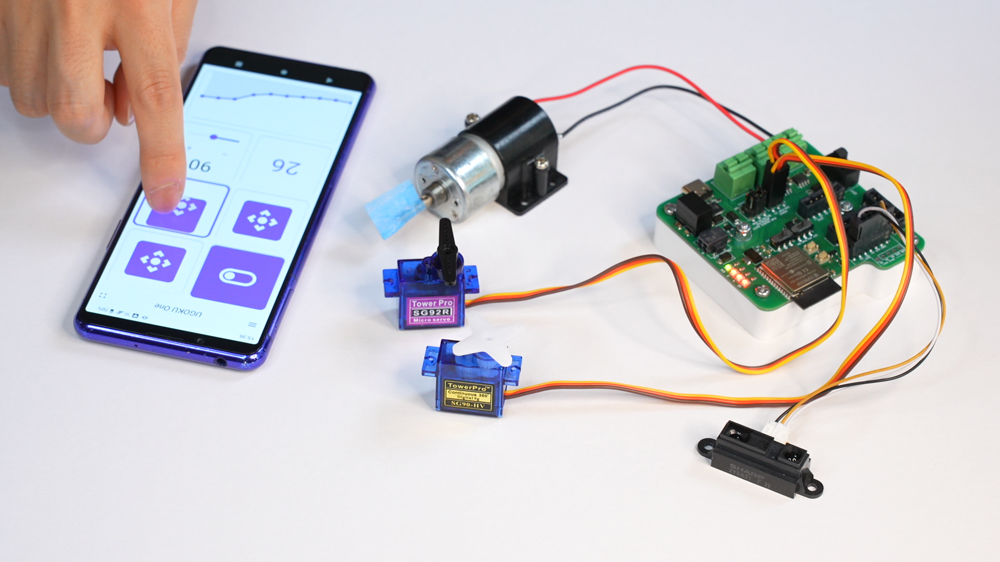

UGOKU Lab では「動くものづくりをもっと手軽に」を実現するオープンソースのツールや体験型デバイスを開発しています
最近の活動
過去のイベント出展情報です。最新情報はTwitterでお知らせしています。

UGOKU Padは、ESP32などのマイコンと無線でスマートフォンを接続し、簡単に操作できるアプリです。ジョイスティックやスライダー、ボタンなど、色々なウィジェットを組み合わせて、自分だけの操作パネルを作成できます。モーターの操作やセンサーデータをモニタリングなど、様々な用途で活用いただけます。 ESP32用のArduinoサンプルコードも用意しているので、気軽にお試しいただけます。

UGOKU One はモータやセンサを使ったロボットなどのDIY製作物を少しでも手軽に操作することを目的に開発しているオープンソースハードウェアの汎用基板です。
- 単四電池ボックス搭載で単四電池4本でDCモーターやRCサーボをの駆動が可能
- Arduinoで開発可能なESP32マイコン搭載(無線通信対応)
- DCモータドライバ（TB67H450FNG）を2個搭載
- 豊富な汎用IOポートでいろんな拡張が可能
- 圧着工具を使用せずにモーターやセンサーの配線が可能

手にもって動かすと不思議な感覚、地球ゴマとしても遊べる。高速で回転する円盤を手のひらサイズのキューブに収めた、誰でも楽しめる体験型デバイス。